1 + 2[1] 31 - 2[1] -11 * 2[1] 21 / 2[1] 0.5(in 3 hours or less)
A hands-on workshop covering R essentials.
The workshop was designed for people with some background in statistics but might have limited programming experience. You may find it useful if you have previously worked mainly in Excel or have used tools like SPSS which promote point-and-click analyses. Alternatively, you might be comfortable with other programming languages such as Python or MATLAB but are new to R.
The aim of this workshop is to give you the 20% of R knowledge that can be combined to get you through 80% of all tasks and to show you how to help yourself through the remaining 20%.
R is a statistical programming language that’s widely used in data analysis, research, and industry. It allows you to manipulate data, perform statistical modelling, and produce publication-quality graphics, all within a single environment.
There are many reasons to learn R, but here are a few of the most important ones:
Before starting, you should:
Install R and RStudio. Follow Sections 5–8 of Happy Git with R. These steps are required — we don’t support legacy software.
Optionally link RStudio and GitHub. Follow Sections 4, 9 and 11 of Happy Git with R. This isn’t essential, but it makes managing and sharing your code much easier later on.
The main goal is to help you start thinking like a programmer while using R to do what you already know best: exploring and understanding data.
By the end of this workshop, you should be able to:
R is a statistical programming language. That means it is great for working with data. Menti
What types of data do you know of already?
What data structures do you know of already? (ways to store, retreive and operate on data)
You can tell the type of a data object using the class() function. Some common data types are:
Integer: 1, 32542, -7, 0
Numeric: 3.14, 0.0, 1.0, 9.99999, -7.89
Logical: TRUE, FALSE, class(TRUE)
Character: "apple", "1", 'carrot', '"quoted speach"'
Factor (categorical): factor(c("red", "green", "blue", "green"))
Factor (ordinal): factor(c("medium", "small", "large", "small"))
Missing: NA
There are also more esoteric ones that you learn as you need them.
You can convert between types of data using e.g. as.numeric(), as.logical() or as.factor().
The simplest way you can use R is as a calculator.
1 + 2[1] 31 - 2[1] -11 * 2[1] 21 / 2[1] 0.5R has lots of built-in mathematical functions and some built-in constants too.
exp(1)[1] 2.718282sin(pi / 2)[1] 1log(2) # natural logarithm by default[1] 0.6931472log10(2) # base 10 is available[1] 0.30103Vectors concatenate lots of values of the same type in one dimension.
c(1,2,3,4)[1] 1 2 3 40:5[1] 0 1 2 3 4 5c("apple", "banana", "carrot")[1] "apple" "banana" "carrot"c(TRUE, FALSE, FALSE, TRUE, FALSE, FALSE)[1] TRUE FALSE FALSE TRUE FALSE FALSEAssignment allows you to store and recall values and is done with an “arrow” <-.
one <- 1
two <- 2
one [1] 1two [1] 2one + two[1] 3You can store vectors too. To extract or replace elements of them, use square brackets.
Pythonistas take note: R uses natural indexing!
foods <- c("apple", "banana", "carrot")
foods[1] "apple" "banana" "carrot"foods[1][1] "apple"fruits <- foods
fruits[3] <- "celementine"
fruits[1] "apple" "banana" "celementine"# drop elements by using negative integers
foods[-3][1] "apple" "banana"What value is contained in the last element of the foods vector?
"carrot""clementine"When we ran the line fruits <- foods above, R made a copy of the foods object. This means that when we alter fruits, the foods vector remains unchanged and the last element is still carrot.
foods[3][1] "carrot"For more on nitty-gritty details of names and values in R, see the relevant section of Advanced R.
What do you expect the output to be?
# a
1 + 1:3
# b
c(1, 2, 3, 4, 5, 6) + c(0, 1)
# c
c(1, 2, 3, 4, 5) + c(0, 1)In each case, R tries to recycle the shorter object up to the length of the longer object by repeating elements. This creates a warning in case (c), because the second vector of length 2 is not repeated a whole number of times.
# a
1 + 1:3[1] 2 3 4# b
c(1, 2, 3, 4, 5, 6) + c(0, 1)[1] 1 3 3 5 5 7# c
c(1, 2, 3, 4, 5) + c(0, 1)Warning in c(1, 2, 3, 4, 5) + c(0, 1): longer object length is not a multiple
of shorter object length[1] 1 3 3 5 5Having data stored in a vector allows us to easily calculate summary statistics.
x <- 1:10 length(x)[1] 10sum(x)[1] 55mean(x)[1] 5.5How would you find the median of x? How about the 90th percentile?
median(x)[1] 5.5quantile(x, probs = 0.9)90%
9.1 This is the first time we have seen a function with multiple inputs or arguments.
Use c() to add a missing value to the start of the vector x. How does that impact the previous summary statistics?
x <- c(NA, x)
length(x)[1] 11sum(x)[1] NAmean(x)[1] NAmedian(x)[1] NAquantile(x, probs = 0.9)Error in quantile.default(x, probs = 0.9): missing values and NaN's not allowed if 'na.rm' is FALSEWhile the length function still works as previously, the different statistical summary functions handle the missing value in different ways. The first three summaries now return NA but the quantile function instead produces an error.
In each case, these functions have an additional argument na.rm which allows us to calculate the summary ignoring any missing values. This is computationally useful but statistically dangerous: estimating quantities using only complete cases can bias our estimates.
To learn more about working with missing data see R for Data Science and for the statistical aspects, see Felxible Imputation on Missing Data.
You can also store numbers in two dimensional arrays (matrices). This can make your code very efficient if it can be represented as a series of matrix operations.
A <- matrix(1:9, nrow = 3)
A [,1] [,2] [,3]
[1,] 1 4 7
[2,] 2 5 8
[3,] 3 6 9Make a 3 by 2 matrix \(B\) containing the numbers 1 to 6.
B <- matrix(1:6, nrow = 3)
B [,1] [,2]
[1,] 1 4
[2,] 2 5
[3,] 3 6Use %*% to calculate \(AB\).
A %*% B [,1] [,2]
[1,] 30 66
[2,] 36 81
[3,] 42 96Create a matrix \(C\) as defined below and calculate its inverse using solve(). Store \(C^{-1}\) assign the result to C_inv
\[ C = \begin{bmatrix} 1 & 1 & 0 \\ 0 & 1 & 1 \\ 0 & 0 & 1 \end{bmatrix}. \tag{1}\]
C <- matrix(
data = c(1,1,0,0,1,1,0,0,1),
nrow = 3,
byrow = TRUE) # my data is ordered by row, not by column
C [,1] [,2] [,3]
[1,] 1 1 0
[2,] 0 1 1
[3,] 0 0 1C_inv <- solve(C)
C_inv [,1] [,2] [,3]
[1,] 1 -1 1
[2,] 0 1 -1
[3,] 0 0 1You will often want to calculate row-wise or column-wise summary statistics of matrices and other grid-like data structures.
Some summary statistics have nice built-in functions such as rowSums() and colSums(). For less common summaries we can use the apply() function to apply another function to each row of column of a matrix.
rowSums(A)[1] 12 15 18apply(X = A, MARGIN = 1, FUN = sum)[1] 12 15 18colMeans(A)[1] 2 5 8apply(X = A, MARGIN = 2, FUN = mean)[1] 2 5 8This is the first time we have seen a function with multiple inputs (arguments). These can be given without names in the default order or in any order with names.
Calculate the column means of \(C\) and the row medians of \(C^{-1}\).
colMeans(C)[1] 0.3333333 0.6666667 0.6666667apply(X = C_inv, MARGIN = 1, FUN = median)[1] 1 0 0In RStudio you can preview the inputs of a function by typing its name with an open parenthesis and then pressing tab. (e.g. apply( + tab.)
You can then use the arrow keys to move through the inputs.
To get more detailed information on a function you can look at its documentation.
To show the documentation for a function, put a question mark before its name. ?apply
What is the second argument of max() and what does it do?
Look at the documentation for rowSums(). What subtle difference is there between rowSums(A) and apply(X = A, MARGIN = 1, FUN = sum)?
We can access the documentation of max() by prepending a question mark:
?max()As with our other summaries, the second argument is na.rm which takes a logical value (TRUE or FALSE) to indicate whether missing values should be removed when calculating the maximum.
We can similarly access the documentation for rowSums() to see how it differs from using apply().
?rowSums()Details
These functions are equivalent to use of apply with
FUN = meanorFUN = sumwith appropriate margins, but are a lot faster. As they are written for speed, they blur over some of the subtleties ofNaNandNA. Ifna.rm = FALSEand eitherNaNorNAappears in a sum, the result will be one ofNaNorNA, but which might be platform-dependent.
So far we have focused on collecting together data that is all of the same type. A data.frame allows you to gather data of different types.
Usually each row will represent one observational unit (a person, a penguin, a city) and each column represents a measured quantity (age, gender, sex, species, population, capital status).
grades <- data.frame(student_id = 1:3, score = c(90, 85, 88))
grades student_id score
1 1 90
2 2 85
3 3 88# Avoid very long lines by using line breaks
grades <- data.frame(
student_id = 1:6,
score = c(90, 85, 88, 52, 66, 41),
class = c("Distinction", "Distinction", "Distinction",
"Pass", "Merit", "Fail"),
pass = c(rep(TRUE, 5), FALSE)
)
grades student_id score class pass
1 1 90 Distinction TRUE
2 2 85 Distinction TRUE
3 3 88 Distinction TRUE
4 4 52 Pass TRUE
5 5 66 Merit TRUE
6 6 41 Fail FALSEWe can extract individual rows using their row and column indices
# first row
grades[1, ] student_id score class pass
1 1 90 Distinction TRUE# second column
grades[ ,2][1] 90 85 88 52 66 41# first row of second column
grades[1, 2][1] 90Or using the column names:
grades$class [1] "Distinction" "Distinction" "Distinction" "Pass" "Merit"
[6] "Fail" grades[ ,"class"][1] "Distinction" "Distinction" "Distinction" "Pass" "Merit"
[6] "Fail" grades[, c("score", "class")] score class
1 90 Distinction
2 85 Distinction
3 88 Distinction
4 52 Pass
5 66 Merit
6 41 FailOr using logical conditions:
grades[grades$pass == FALSE, ] student_id score class pass
6 6 41 Fail FALSESubset the grades data frame to extract the id and score of the students whose score is at least 87.
grades[grades$score >= 87, c("student_id", "score")] student_id score
1 1 90
3 3 88Is there any difference between grades$class and grades[ ,"class"]?
# are the entries the same?
grades$class[1] "Distinction" "Distinction" "Distinction" "Pass" "Merit"
[6] "Fail" grades[,"class"][1] "Distinction" "Distinction" "Distinction" "Pass" "Merit"
[6] "Fail" # are the data structures the same?
class(grades$class)[1] "character"class(grades[,"class"])[1] "character"When subsetting a data.frame, either method will produce a vector. This is not the same as for a closely related data structure known as a tibble.
You can add elements to a data.frame by assigning them to non-existent columns or rows. (Be careful of the latter!)
grades$gender <- rep("Female", 6)Make up a vector with an additional entry and try adding it as a 7th row of grades. What happens? Why do you think that happens?
If we try to make an extra row of data as a vector, we will run into trouble. Vectors are only allowed to contain a single data type and so R will quietly coerce all of the elements into the most general form, in this case a character string.
extra_student <- c(7, 69, "Merit", TRUE, "Male")
extra_student[1] "7" "69" "Merit" "TRUE" "Male" If we then try to add this to our data.frame, R will convert each column to be character strings too.
rbind(grades, extra_student) student_id score class pass gender
1 1 90 Distinction TRUE Female
2 2 85 Distinction TRUE Female
3 3 88 Distinction TRUE Female
4 4 52 Pass TRUE Female
5 5 66 Merit TRUE Female
6 6 41 Fail FALSE Female
7 7 69 Merit TRUE MaleInstead, what we should do is create a smaller data.frame for our new student.
extra_student_df <- data.frame(
student_id = 7,
score = 69,
class = "Merit",
pass = TRUE,
gender = "Male"
)
extra_student_df student_id score class pass gender
1 7 69 Merit TRUE MaleAs long as our column names and types align properly, this can then be successfully row-bound to the existing grades data.frame.
rbind(grades, extra_student_df) student_id score class pass gender
1 1 90 Distinction TRUE Female
2 2 85 Distinction TRUE Female
3 3 88 Distinction TRUE Female
4 4 52 Pass TRUE Female
5 5 66 Merit TRUE Female
6 6 41 Fail FALSE Female
7 7 69 Merit TRUE MaleLists generalise data.frames by allowing us to have entries of different data types and different lengths.
zv <- list(
forename = "Zak",
surname = "Varty",
years_at_imperial = 4,
modules = c('Data Science', "Ethical MLDS"))You can even get wild and have nested lists, where elements of the list are themselves lists!
zv <- list(
forename = "Zak",
surname = "Varty",
years_at_imperial = 4,
modules = list(
data_science = list(programme = "MSc Stats",
students = 85,
online = FALSE,
room = "HXLY 139"),
ethical_mlds = list(programme = "MSc MLDS",
students = 95,
online = TRUE))
)R also has some other, application specific, data structures but under the hood these are usually just lists.
If we have tabular data, a comma separated value (csv) file is one of the most accessible ways to store it. We can create files using write.csv()
write.csv(grades, "grades.csv")We can then remove it from our workspace
rm(grades)and re-load it from the CSV we just created
grades <- read.csv("grades.csv")If we want to save R objects in their existing form we can use an R Data Serialised (RDS) file. This lets us save and load more complicated data structures but at the expense of making our data harder to access using tools other than R.
(RDS files are not human-readable and are not easily ported between programming languages.)
Follow the previous example to use saveRDS() and readRDS() to save the zv nested list to a file, remove it from the workspace and reload it from the file you just created.
saveRDS(object = zv, file = "zv.RDS")
rm(zv)
zvError: object 'zv' not foundzv <- readRDS(file = "zv.RDS")
zv$forename
[1] "Zak"
$surname
[1] "Varty"
$years_at_imperial
[1] 4
$modules
$modules$data_science
$modules$data_science$programme
[1] "MSc Stats"
$modules$data_science$students
[1] 85
$modules$data_science$online
[1] FALSE
$modules$data_science$room
[1] "HXLY 139"
$modules$ethical_mlds
$modules$ethical_mlds$programme
[1] "MSc MLDS"
$modules$ethical_mlds$students
[1] 95
$modules$ethical_mlds$online
[1] TRUEIt is important to be aware of where in your file system R is running. This is the so-called “working directory” and file paths are relative to this location. Use
pwdin the terminal orgetwd()in R to find this out.If your code is run from a notebook document like Rmd, qmd and jupytper notebook code and any file paths will be run from the location of the notebook.
If you are editing a notebook in RStudio, the working directory for your console might not be the same as the location of the notebook. While you can use
setwd()to change this, it is much better to design your projects to use portable file paths. The{here}package can be helpful for this, check out the getting started documentation.
Probability density/mass functions can be referenced using functions with a d prefix. (e.g. dnorm(), dgamma(), …)
dnorm(x = 0, mean = 0, sd = 1)[1] 0.3989423# sanity check
1/(sqrt(2 * pi))[1] 0.3989423We can pass vectors as inputs. Smaller inputs will be “recycled”
dnorm(x = 1:6, mean = 1:3, sd = 1:2)[1] 0.398942280 0.199471140 0.398942280 0.064758798 0.004431848 0.064758798Describe to your neighbour which probability density functions are being referenced in the above code.
This same feature allows us to easily plot probability density functions.
x <- seq(from = -3,to = 3, by = 0.01)
density <- dnorm(x = x, mean = 0 , sd = 1)
plot(x = x, y = density, type = "l")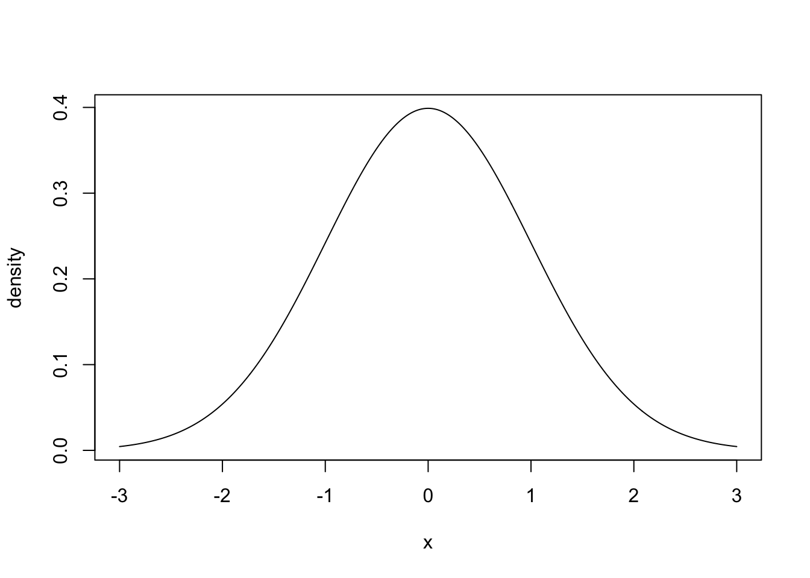
Probability functions take as input a value and return the corresponding quantile level of the distribution (\(x \rightarrow \Pr(X \leq x)\)). Let’s sanity check this against a few common reference values that you might be familiar with already.
# check against some reference values
pnorm(q = -1.64, mean = 0, sd = 1)[1] 0.05050258pnorm(q = 0, mean = 0, sd = 1)[1] 0.5pnorm(q = 1.96, mean = 0, sd = 1)[1] 0.9750021These functions take vectorised inputs and so can be used to easily plot cumulative distribution functions
x <- seq(from = -3,to = 3, by = 0.01)
probability <- pnorm(q = x, mean = 0 , sd = 1)
plot(x = x,
y = probability,
type = "l",
main = "CDF of standard Normal distribution")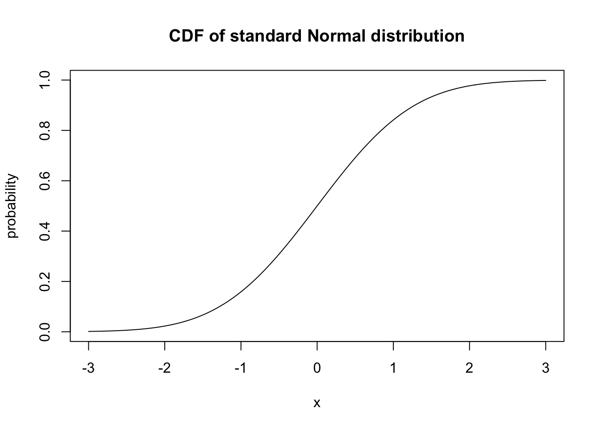
Finally, quantile functions take a probability and return the corresponding quantile of that distribution.
p <- ppoints(1001)
quantile <- qnorm(p = p, mean = 0, sd = 1)
plot(
x = p,
y = quantile,
type = "l",
main = "Inverse CDF of standard Normal distribution")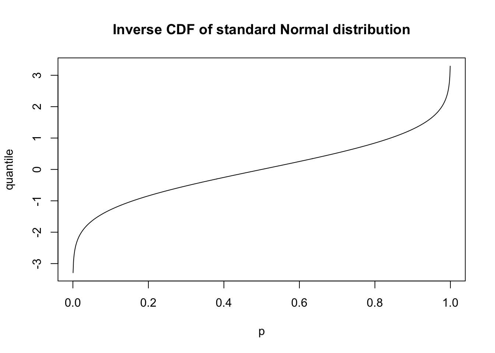
Make similar plots for the standard exponential distribution.
x <- seq(from = -0.1, to = 5, by = 0.01)
p <- ppoints(1001)
density <- dexp(x = x, rate = 1)
probability <- pexp(q = x, rate = 1)
quantile <- qexp(p = p, rate = 1)
plot(
x = x,
y = density,
type = "l",
#main = "PDF of standard Exponential distribution",
cex.axis = 1.8,
cex.lab = 1.8,
lwd = 2)
plot(
x = x,
y = probability,
type = "l",
#main = "CDF of standard Exponential distribution",
cex.axis = 1.8,
cex.lab = 1.8,
lwd = 2)
plot(
x = p,
y = quantile,
type = "l",
#main = "Inverse CDF of standard Exponential distribution",
cex.axis = 1.8,
cex.lab = 1.8,
lwd = 2)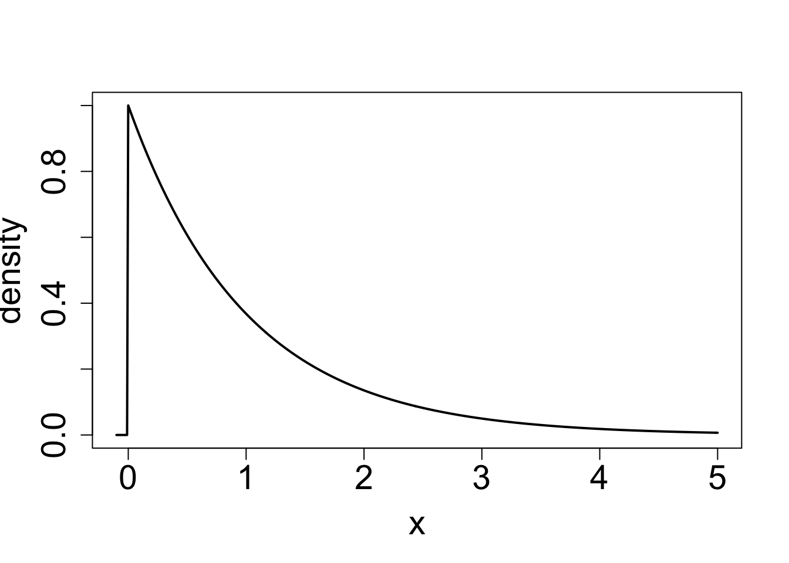
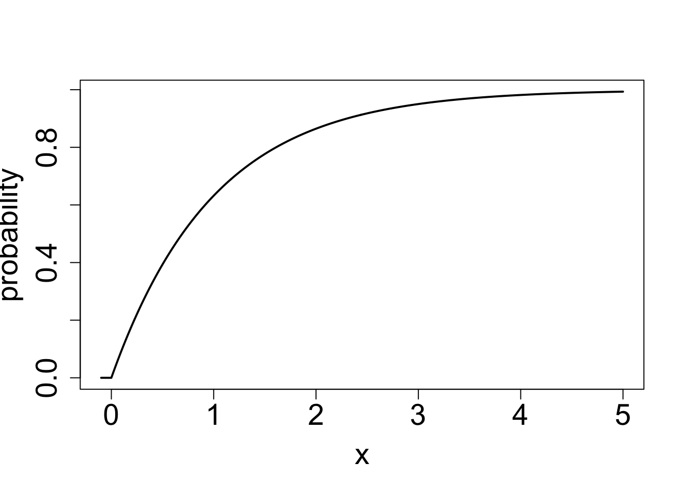
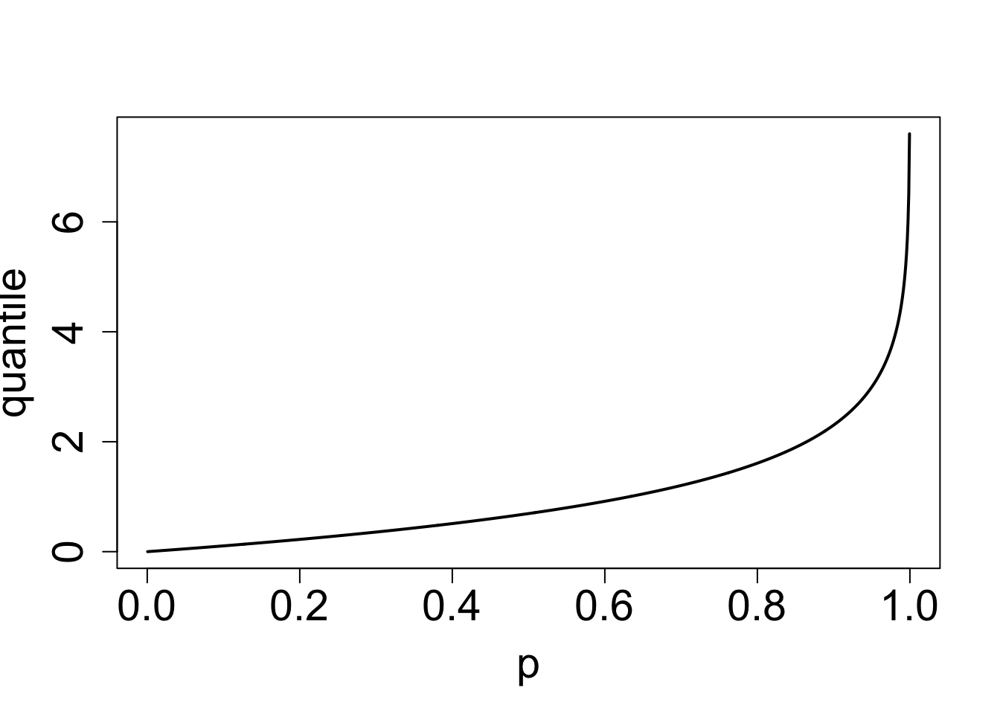
The corresponding functions are called: dunif(), runif(), punif(), and qunif().
The function runif() often causes confusion because it can be mistakenly read as runif() rather than runif().
We can simulate a realisation of a random variable by using the equivalent functions with an “r” prefix. We could generate a single random variate from the standard normal distribution.
rnorm(n = 1, mean = 0, sd = 1)[1] 0.008650608To simulate lots of random variates we increase the sample size, n.
rnorm(n = 5, mean = 1, sd = 1)[1] 0.6772820 -0.4607276 1.7491028 1.5973801 1.3119558Similar to previous functions we can vectorise the inputs.
rnorm(n = 5, mean = 1:5, sd = 1)[1] 0.5769158 2.8552514 4.5785421 4.6576583 5.0611405But if we re-run the same line of code we get a different set of outputs.
rnorm(n = 5, mean = 1:5, sd = 1)[1] 1.709067 2.228525 2.401925 2.966954 7.198925This is exactly what we want but is terrible for reproducibility. What if your work is reviewed and the conclusions no longer match the simulated data?
We can set the seed of our random number generator to avoid this problem. Suppose in our simulations we want to generate two sets of random numbers.
set.seed(1234)
rnorm(n = 5, mean = 1:5, sd = 1)[1] -0.2070657 2.2774292 4.0844412 1.6543023 5.4291247rnorm(n = 5, mean = 1:5, sd = 1)[1] 1.506056 1.425260 2.453368 3.435548 4.109962We get different numbers each time we run rnorm() but if we rerun the entire code we will get the same result.
set.seed(1234)
rnorm(n = 5, mean = 1:5, sd = 1)[1] -0.2070657 2.2774292 4.0844412 1.6543023 5.4291247rnorm(n = 5, mean = 1:5, sd = 1)[1] 1.506056 1.425260 2.453368 3.435548 4.109962You can think of the seed as the starting point in a long list of random numbers and you are choosing which entry to start reading from.
Randomness is inherent to a lot of the work we do as data scientists but making the randomness reproducible by using a seed lets us act more like software engineers.
Reproducibile Results: Do you get the exact same results each time code is run?
Benefits of reproducible results:
One caveat is to be wary of “seed hacking”. While checking that your results stay the same numerically for a given seed, the qualitative conclusions you draw should be stable across a range of seed values.
Without setting a seed, simulate 2 datasets. Each should come be of a different size and be drawn from two Normal distributions with different parameters.
Use qqnorm() to create a plot comparing the quantiles of your samples to the quantiles of the best-fitting Normal distribution.
Rerun your previous code and see the plots change.
Add a seed to your code and check that you get the same plots every time.
Use hist() to create a histogram for each of your samples.
We first simulate two datasets and create a qq-plot for each. We can also add a line to show equality between quantiles of the sample and the best fitting Gaussian model.
# a)
x <- rnorm(n = 100, mean = 0, sd = 1)
y <- rnorm(n = 30, mean = -1, sd = 0.1)
# b)
qqnorm(x, main = "", bty = "n", cex.axis = 1.5, cex.lab = 1.5, pch = 16, asp = 1)
qqline(x)
qqnorm(y, main = "", bty = "n", cex.axis = 1.5, cex.lab = 1.5, pch = 16, asp = 1)
qqline(y)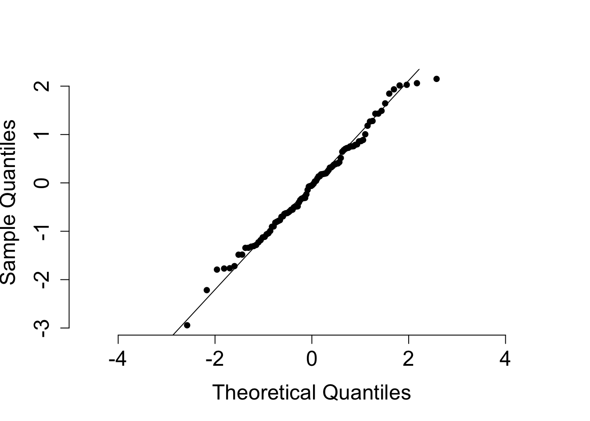
If we run the same code again, we get different data sets. This is most visible for x where the smallest sample quantiles go from being above to below the line of equality.
#c)
x <- rnorm(n = 100, mean = 0, sd = 1)
y <- rnorm(n = 30, mean = -1, sd = 0.1)
qqnorm(x, main = "", bty = "n", cex.axis = 1.5, cex.lab = 1.5, pch = 16, asp = 1)
qqline(x)
qqnorm(y, main = "", bty = "n", cex.axis = 1.5, cex.lab = 1.5, pch = 16, asp = 1)
qqline(y)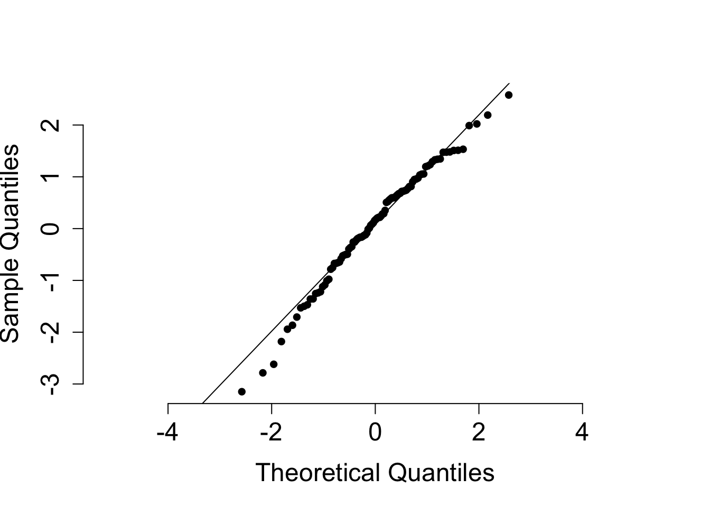
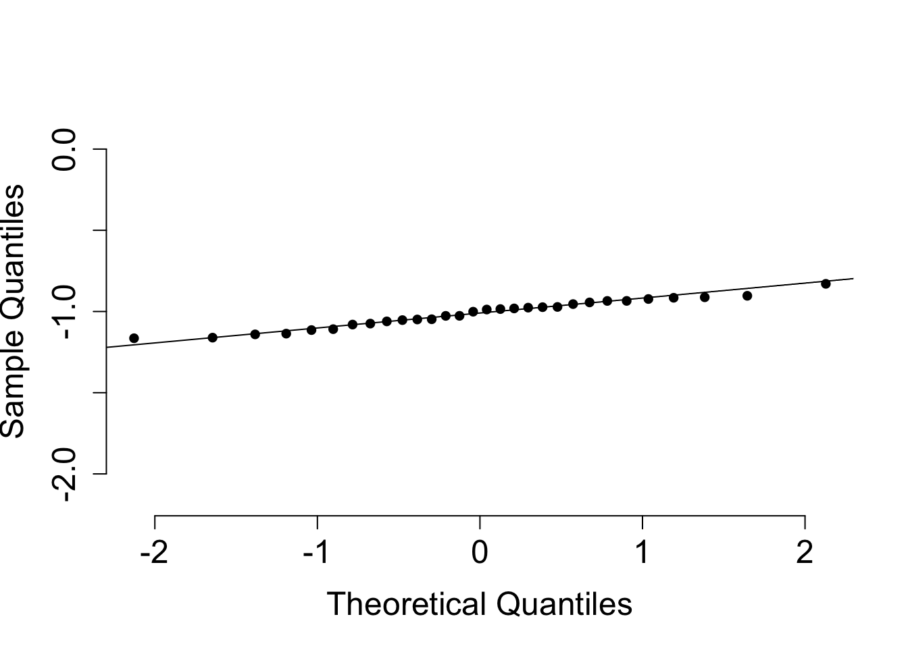
We can add a seed to prevent this from happening.
#d)
set.seed(1234)
x <- rnorm(n = 100, mean = 0, sd = 1)
y <- rnorm(n = 30, mean = -1, sd = 0.1)
qqnorm(x, main = "", bty = "n", cex.axis = 1.5, cex.lab = 1.5, pch = 16, asp = 1)
qqline(x)
qqnorm(y, main = "", bty = "n", cex.axis = 1.5, cex.lab = 1.5, pch = 16, asp = 1)
qqline(y)
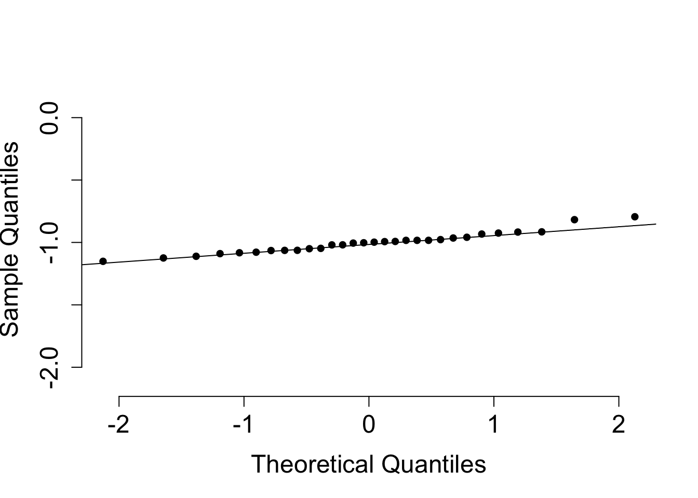
Running the same code again now gets us the same results. We can also add in histograms of each sample anywhere within this code because they do not require any random number generation.
#
set.seed(1234)
x <- rnorm(n = 100, mean = 0, sd = 1)
y <- rnorm(n = 30, mean = -1, sd = 0.1)
qqnorm(x, main = "", bty = "n", cex.axis = 1.5, cex.lab = 1.5, pch = 16, asp = 1)
qqline(x)
hist(x)
qqnorm(y, main = "", bty = "n", cex.axis = 1.5, cex.lab = 1.5, pch = 16, asp = 1)
qqline(y)
hist(y)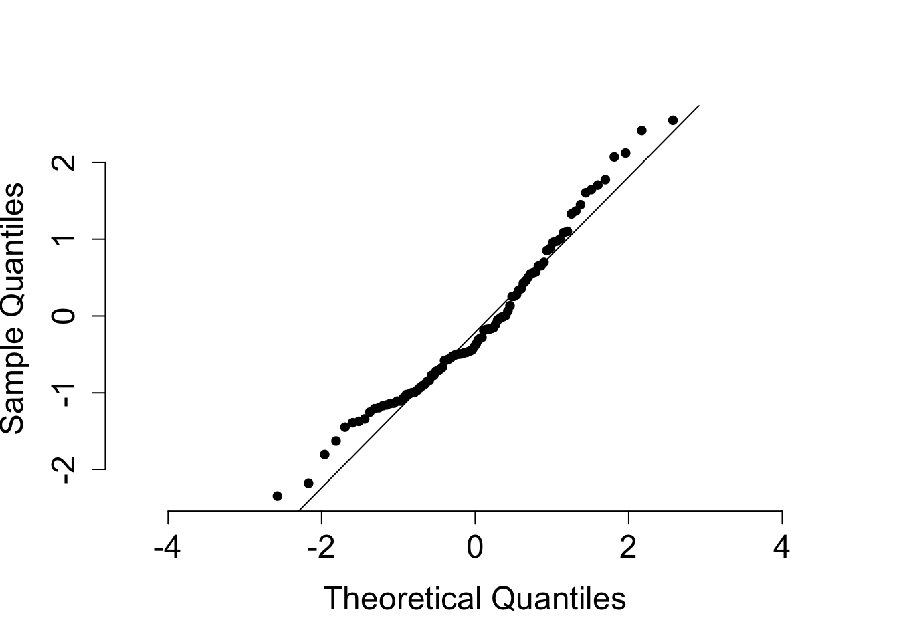
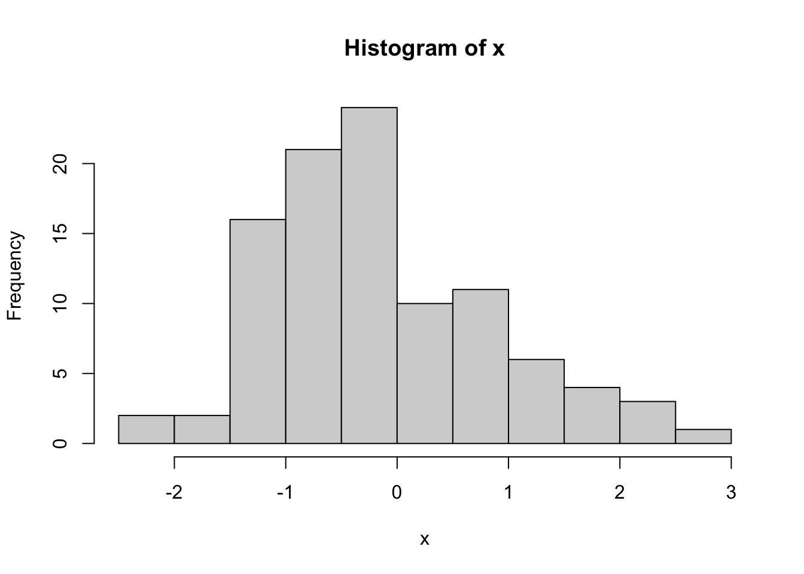

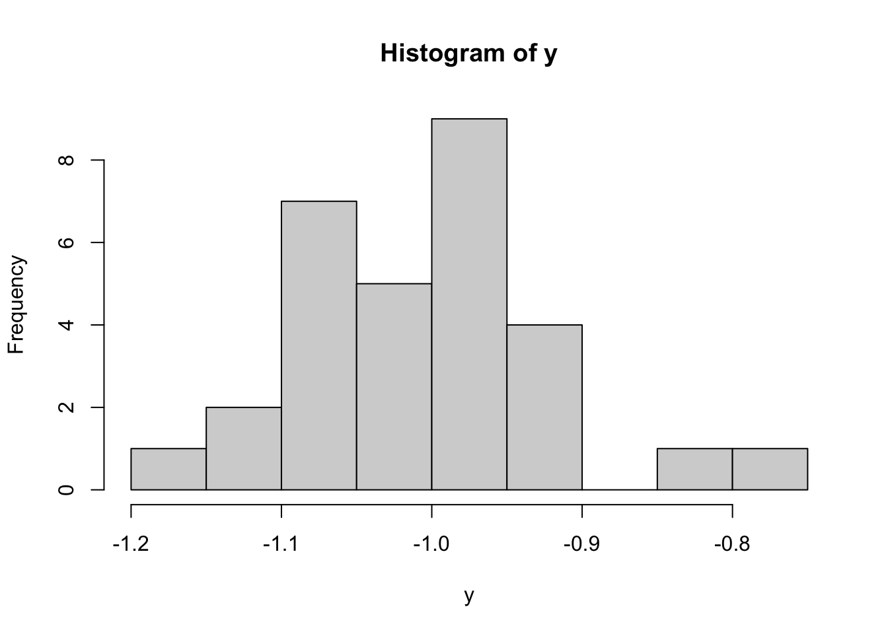
Sometimes you have to do things over and over and over and over and over….
If there is structure to what you are doing, you don’t need to repeat yourself in code.
# The dumb way
print("a")[1] "a"print("b")[1] "b"print("c")[1] "c"print('...')[1] "..."# The DRY way
for (i in 1:26) {
print(letters[i])
}[1] "a"
[1] "b"
[1] "c"
[1] "d"
[1] "e"
[1] "f"
[1] "g"
[1] "h"
[1] "i"
[1] "j"
[1] "k"
[1] "l"
[1] "m"
[1] "n"
[1] "o"
[1] "p"
[1] "q"
[1] "r"
[1] "s"
[1] "t"
[1] "u"
[1] "v"
[1] "w"
[1] "x"
[1] "y"
[1] "z"Here i is a dummy variable. It exists only within that for look and progresses through the values of c(1, 2, ..., 26) as the code in curly brackets gets executed for each of these values.
Since i is a dummy variable, we can call it anything we like. A more informative way of writing the same code would be:
for (letter in letters) {
print(letter)
}[1] "a"
[1] "b"
[1] "c"
[1] "d"
[1] "e"
[1] "f"
[1] "g"
[1] "h"
[1] "i"
[1] "j"
[1] "k"
[1] "l"
[1] "m"
[1] "n"
[1] "o"
[1] "p"
[1] "q"
[1] "r"
[1] "s"
[1] "t"
[1] "u"
[1] "v"
[1] "w"
[1] "x"
[1] "y"
[1] "z"Note: For loops are relatively slow compared to vectorisation. They should mainly be used when there is a requirement for things to be done sequentially.
A useful helper functions to use with for loops is seq_along(). What do you think it does?
seq_along() returns a regular sequence of integers matching the dimension of it’s first argument. This can be useful when iterating over an object in a for loop.
Vector and list inputs behave as one might expect.
seq_along(foods)[1] 1 2 3seq_along(zv)[1] 1 2 3 4A data.frame is actually a list where each element is one column, so the sequence goes along the columns rather than the rows as we might expect.
seq_along(grades)[1] 1 2 3 4 5 6A matrix is actually a vector with dimension meta-data attached, so the sequence goes over all elements of the vector.
seq_along(A)[1] 1 2 3 4 5 6 7 8 9One downside to for loops is that, before you run the code, you either need an object to iterate along or to know how many times to repeat the code within the curly braces.
while-loops avoid this need. They will repeat the bracketed code until the condition you pre-specify is no longer TRUE.
j <- 12
i <- 0
while (j > 0.002) {
j <- j / 3
i <- i + 1
print(j)
}[1] 4
[1] 1.333333
[1] 0.4444444
[1] 0.1481481
[1] 0.04938272
[1] 0.01646091
[1] 0.005486968
[1] 0.001828989You can use any sort of Boolean condition as your condition:
<, <=, ==, >=, >, !==.TRUE or FALSE: %in% ,is.na()There is danger here. If the condition is always TRUE you will be stuck in an infinite loop and your code will never stop running. (Note: this is not as scary as it sounds!)
j <- 12
i <- 0
while (j > 0.002) {
i <- i / 3
j <- j + 1
Sys.sleep(1) # slow things down for demo
print(j)
}While loops lead us nicely into flow control. This is where under different conditions you want to take different actions. if and else allow you to do this and take the same structure as while.
a <- 1
if (a > 2) {print(a)}
if (a > 0) {print("a is positive")}[1] "a is positive"if (a == 0) {print("a is neither postive nor negative")}
if (a < 0) {print("a is negative")}a <- 1
if (a > 2) {
print(a)
} else if (a > 0) {
print("a is positive")
} else if (a < 0) {
print("a is negative")
} else {
print("a is neither positive nor negative")
}[1] "a is positive"Multiple-case flow control like this can be hard to read and write but they do have a computational benefit if one of the if conditions is expensive to evaluate and sometimes having a catch-all else term is useful for handling unexpected situations gracefully.
Can you think of an example where the second code would work but the first would not?
If we set a <- "a" then in the first code block, then a > 2 and a > 0 are both TRUE but a == 0 is FALSE.
The first two of these might seem odd. This is because 2 and 0 are transformed into character strings "2" and "0" before comparison is made with "a". The logical output follows because "a" is earlier in the alphabet than numerals. The first code fails to make the user aware “a” is neither positive nor negative and that this unexpected sort of comparison is taking place.
Another important difference is that the first code will check every condition. In the second code, as soon as one condition is true the rest are skipped. This can be helpful when trying to write more efficient code.
Write a loop that prints whether each number from 1 to 5 is even or odd. You might find %% useful for this.
When we have only two options in an if-else construction, the ifelse() function provides a useful shorthand.
for (integer in 1:5) {
odd_or_even <- ifelse(test = integer %% 2 == 0, yes = "even.", no = "odd.")
print(paste(integer, "is", odd_or_even ))
}[1] "1 is odd."
[1] "2 is even."
[1] "3 is odd."
[1] "4 is even."
[1] "5 is odd."Write code that picks a number \(N\) between 5 and 10 (inclusive) uniformly at random. Write a loop that prints whether each number from n to 10 is even or odd.
# sample random integer
N <- sample(x = 5:10, size = 1)
# print odd/even status of N an all larger integers up to 10
for (integer in N:10) {
odd_or_even <- ifelse(test = integer %% 2 == 0, yes = "even.", no = "odd.")
print(paste(integer, "is", odd_or_even ))
}[1] "6 is even."
[1] "7 is odd."
[1] "8 is even."
[1] "9 is odd."
[1] "10 is even."Write code that starts with an empty vector c() and simulates exponential random variates until their sum exceeds 10. Your code should return the sequence of partial sums.
# simulation parameters
limit <- 10
exponential_rate <- 1
# initialise simulation
total <- 0
partial_sums <- c()
# generate random variates
while (total < limit) {
total <- total + rexp(n = 1, rate = exponential_rate)
if (total < limit) {partial_sums <- c(partial_sums, total)}
}
partial_sums[1] 3.651790 5.801036 9.288252In data science you’ll often find yourself repeating the same task again and again — maybe calculating a summary statistic, making a specific type of plot, or pre-processing multiple datasets in the same way.
This can lead to a lot of repeated code with only small changes. This is:
Instead we can write a function to capture the shared structure of the repeated code.
# function with one input
square <- function(x) {
return(x^2)
}
# function with two inputs
add <- function(x, y){
return(x + y)
}Suppose we have repetitious code like that below, which pads each vector with NA values.
# extract columns as vectors
class <- grades$class
gender <- grades$gender
pass <- grades$pass
# add leading and trailing NA values
class_padded <- c(NA, NA, grades$class, NA)
gender_padded <- c(NA, NA, grades$gender, NA)
pass_padded <- c(NA, NA, grades$pass, NA)Write a function pad_with_NA to streamline this code. pad_with_NAs(x, n_left, n_right) It should take 3 inputs:
x the vector to be padded,n_left the number of NA values to be added before the vector,n_right the number of NA values to be added after the vector.The very simplest implementation would be something like
pad_with_NAs <- function(x, n_left, n_right){
c(rep(NA, n_left), x, rep(NA, n_right))
}We might also want to add some checks on the inputs the user supplies.
pad_with_NAs <- function(x, n_left, n_right){
stopifnot(n_left >= 0)
stopifnot(n_right >= 0)
stopifnot(class(x) %in% c("character", "complex", "integer",
"logical", "numeric", "factor"))
c(rep(NA, n_left), x, rep(NA, n_right))
}We can then replace our previous code with the following.
# add leading and trailing NA values
class_padded <- pad_with_NAs(grades$class, n_left = 2, n_right = 1)
gender_padded <- pad_with_NAs(grades$gender, n_left = 2, n_right = 1)
pass_padded <- pad_with_NAs(grades$pass, n_left = 2, n_right = 1)Note: For such a simple operation, this might not seem worthwhile. However, for more complicated operations it can reduce the overall amount of code needed or make the purpose of the code much more clear.
airquality is a dataset that is included in the base R installation.
Write a function farenheit_to_centigrade() and use this to add a Temp_C column to the airquality data frame. Note: \(C = (F - 32) \times \frac{5}{9}\).
airquality <- datasets::airquality
farenheit_to_centigrade <- function(){
# YOUR CODE GOES HERE
}
# YOUR CODE GOES HEREfarenheit_to_centigrade <- function(farenheit, round_digits = 0){
round((farenheit - 32) * 5 / 9, round_digits)
}airquality$Temp_C <- farenheit_to_centigrade(airquality$Temp, round_digits = 1)
head(airquality, n = 5) Ozone Solar.R Wind Temp Month Day Temp_C
1 41 190 7.4 67 5 1 19.4
2 36 118 8.0 72 5 2 22.2
3 12 149 12.6 74 5 3 23.3
4 18 313 11.5 62 5 4 16.7
5 NA NA 14.3 56 5 5 13.3Function definitions can get quite long and messy. In real-world applications we usually keep them in their own R file named after the function. This keeps any notebooks or analysis scripts easy to read and makes the relevant function definition easy to find.
src in the same directory as this notebook.pad_with_NAs.R and farenheit_to_centigrade.R.We can now remove the functions from our working environment and load them from their source code.
rm("pad_with_NAs", "farenheit_to_centigrade")source("src/farenheit_to_centigrade.R")
source("src/pad_with_NAs.R")Building up a collection of function definitions like this can:
The last part of this is where libraries or packages come in. These are ways for people to share their functions, code or data with other people. They are just collections of files like src/pad_with_NAs.R, designed to extend to capabilities of base R.
Making your own R package is surprisingly easy. See https://r-pkgs.org/ for more details.
Some common packages you might have heard about are {ggplot2} for data visualisation, {dplyr} for data wrangling or {ts} for time-series analyses.
# download package files from CRAN to your computer
install.packages("ggplot2")# quietly load the functions and data for use in R
library("ggplot2")# access a dataset from that package
head(ggplot2::diamonds, n = 4)# A tibble: 4 × 10
carat cut color clarity depth table price x y z
<dbl> <ord> <ord> <ord> <dbl> <dbl> <int> <dbl> <dbl> <dbl>
1 0.23 Ideal E SI2 61.5 55 326 3.95 3.98 2.43
2 0.21 Premium E SI1 59.8 61 326 3.89 3.84 2.31
3 0.23 Good E VS1 56.9 65 327 4.05 4.07 2.31
4 0.29 Premium I VS2 62.4 58 334 4.2 4.23 2.63One thing that good packages have in abundance is documentation.
run ?diamonds to learn about the diamonds dataset.
There is a package called {ROxygen2} that is full of useful functions to help you document your own code.
install.packages("roxygen2")cmd + option + shift + “r” or crtl + option + shift + “r”.pad_with_NAs <- function(x, n_left, n_right){
stopifnot(n_left >= 0)
stopifnot(n_right >= 0)
stopifnot(class(x) %in% c("character", "complex", "integer",
"logical", "numeric", "factor"))
c(rep(NA, n_left), x, rep(NA, n_right))
}This should get you something like this.
#' Title
#'
#' @param x
#' @param n_left
#' @param n_right
#'
#' @returns
#' @export
#'
#' @examples
pad_with_NAs <- function(x, n_left, n_right){
stopifnot(n_left >= 0)
stopifnot(n_right >= 0)
stopifnot(class(x) %in% c("character", "complex", "integer",
"logical", "numeric", "factor"))
c(rep(NA, n_left), x, rep(NA, n_right))
}You just need to fill out relevant fields to tell someone else (or future you) what the function does, it’s expected inputs and outputs.
#' Add NAs to a vector
#'
#' @param x Vector to which NAs will be added.
#' @param n_left Number of NAs to add before x.
#' @param n_right Number of NAs to add after x.
#'
#' @return A vector containing x with the requested number of NA values before and after.
#'
#' @export
#' @examples
#' pad_with_NAs(1:5, n_left = 0, n_right = 3)
#' pad_with_NAs(c("spider", "mouse", "cat", "dog"), n_left = 1, n_right = 2)
#'
pad_with_NAs <- function(x, n_left, n_right){
stopifnot(n_left >= 0)
stopifnot(n_right >= 0)
stopifnot(class(x) %in% c("character", "complex", "integer",
"logical", "numeric", "factor"))
c(rep(NA, n_left), x, rep(NA, n_right))
}Add this documentation to pad_with_NAs.R and add your own documentation for to farenheit_to_centigrade.R.
| Property | Notebook | Script | Command Line |
|---|---|---|---|
| reproducible | ~ | ✓ | X |
| readable | ~ | ✓ | ~ |
| self-documenting | ✓ | X | X |
| in production | X | ✓ | ~ |
| ordering / automation | ~ | ✓ | ~ |
palmerpenguins package and load the penguins dataset it contains.TRUE/FALSE values indicating whether there are missing values for each penguin.species_mean() that calculates the mean of a numeric variable for each species. Document it with Roxygen2-style comments.# =============
# 1 - load Palmer Penguins data ------------------------------------------------
# =============
# if you do not have the package installed already
install.packages("palmerpenguins")# load the package
penguins <- palmerpenguins::penguinsThere are many ways to add an all_observed column. In this implementation, we initially create a logical vector with one value per row in the penguins dataset, starting with all FALSE, essentially assuming that every row has no missing values to begin with.
We then loop over each column in the dataset in turn, updating missing_values based on whether the current column or any previous column contained a missing value. Finally we negate this to get a vector indicating whether all values were observed for each penguin.
# =============
# 2 - add `missing_values` column ----------------------------------------------
# =============
missing_values <- rep(FALSE, nrow(penguins))
for (col in seq_along(penguins)) {
missing_values <- missing_values | is.na(penguins[ ,col])
}
penguins$missing_values <- missing_values
head(penguins, n = 5)# A tibble: 5 × 9
species island bill_length_mm bill_depth_mm flipper_length_mm body_mass_g
<fct> <fct> <dbl> <dbl> <int> <int>
1 Adelie Torgersen 39.1 18.7 181 3750
2 Adelie Torgersen 39.5 17.4 186 3800
3 Adelie Torgersen 40.3 18 195 3250
4 Adelie Torgersen NA NA NA NA
5 Adelie Torgersen 36.7 19.3 193 3450
# ℹ 3 more variables: sex <fct>, year <int>, missing_values <lgl[,1]>There are many other ways of implementing this and it is such a common operation that there is a built-in function to help with this: penguins$missing_values <- !complete.cases(penguins).
#######
# 3 - Find the average bill length and flipper length for each species of penguin.
#######
species_names <- levels(penguins$species)
n_species <- length(species_names)
cols_to_summarise <- c("bill_length_mm", "flipper_length_mm", "body_mass_g")
# storage for output
species_summaries <- data.frame(
species = species_names,
bill_length_mm = rep(NA, n_species),
flipper_length_mm = rep(NA, n_species)
)
species_id <- 1
for (species_name in species_names) {
# subset to relevant metrics for penguins of the correct species
is_in_species <- penguins$species == species_name
species_data <- penguins[is_in_species, cols_to_summarise]
# calculate means of desired columns
species_means <- colMeans(species_data, na.rm = TRUE)
# store in data.frame
species_summaries[species_id, cols_to_summarise] <- species_means
species_id <- species_id + 1
}The average of the recorded bill and flipper lengths for each species are given in Table 1. From this table we can see that Adelie penguins are, on average, the smallest in both respects.
knitr::kable(species_summaries)| species | bill_length_mm | flipper_length_mm | body_mass_g |
|---|---|---|---|
| Adelie | 38.79139 | 189.9536 | 3700.662 |
| Chinstrap | 48.83382 | 195.8235 | 3733.088 |
| Gentoo | 47.50488 | 217.1870 | 5076.016 |
# =============
# 4 - species mean of numeric variable ------------------------------------------------
# =============
#' Calculate species-wise means for a given variable
#'
#' This function computes the mean of a specified numeric variable
#' for each species in a dataset containing a `species` column.
#' It returns a summary data frame with one row per species.
#'
#' @param data A data frame containing at least a `species` column
#' and the variable specified by `variable_name`.
#' @param variable_name A string giving the name of the numeric variable
#' to summarize (e.g., `"bill_length_mm"`).
#'
#' @return A data frame with two columns:
#' \describe{
#' \item{species}{The species names.}
#' \item{<variable_name>}{The mean of the specified variable for each species.}
#' }
#'
#' @details
#' The function checks that both the `species` column and the specified variable
#' exist in the provided dataset. Missing values (`NA`) are ignored when computing means.
#'
#' @examples
#' \dontrun{
#' library(palmerpenguins)
#' species_mean(penguins, "bill_length_mm")
#' }
#'
species_mean <- function(data, variable_name){
stopifnot("species" %in% colnames(data))
stopifnot(variable_name %in% colnames(data))
species_names <- levels(penguins$species)
n_species <- length(species_names)
# storage for output
species_summaries <- data.frame(X1 = species_names, X2 = rep(NA, n_species))
colnames(species_summaries) <- c("species", variable_name)
species_id <- 1
for (species_name in species_names) {
# subset to relevant metrics for penguins of the correct species
is_in_species <- data$species == species_name
species_data <- data[is_in_species, variable_name]
# calculate means of desired columns
species_mean <- mean(species_data, na.rm = TRUE)
# store in data.frame
species_summaries[species_id, variable_name] <- species_mean
species_id <- species_id + 1
}
species_summaries
}
species_mean(data = penguins, variable_name = "bill_length_mm")Warning in mean.default(species_data, na.rm = TRUE): argument is not numeric or
logical: returning NA
Warning in mean.default(species_data, na.rm = TRUE): argument is not numeric or
logical: returning NA
Warning in mean.default(species_data, na.rm = TRUE): argument is not numeric or
logical: returning NA species bill_length_mm
1 Adelie NA
2 Chinstrap NA
3 Gentoo NA#######
# 5 - Create a scatter plot of flipper length vs. body mass, with different
# symbols and colours for each species.
#######
plot(
x = penguins$body_mass_g,
y = penguins$flipper_length_mm,
col = 1 + as.numeric(penguins$species),
pch = 15 + as.numeric(penguins$species),
xlab = "Body mass (g)",
ylab = "Flipper length (mm)")
###
# 6 - Add points to your scatter plot to show the species-specific mean values,
# using a different shape or colour
###
points(
x = species_summaries$body_mass_g,
y = species_summaries$flipper_length_mm,
cex = 1.5,
pch = 16:18)
legend(
"bottomright",
title = "Species",
legend = species_summaries$species,
pch = 16:18,
col = 2:4,
bty = "n"
)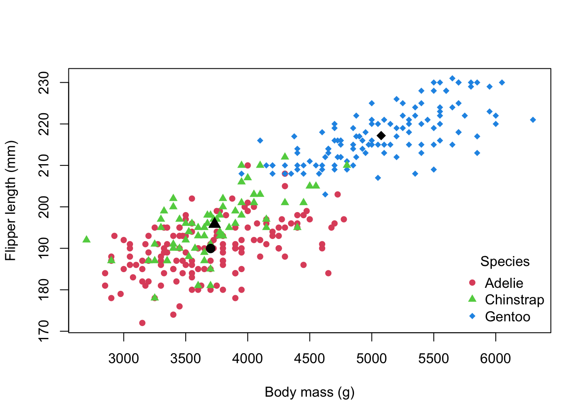
Office hour later today, Huxley 533.
Effective Data Science Notes - Chapters 1 - 4.
Telling Stories With Data - R essentials
GTA support during Statistics Clinics
Each other!
pander::pander(sessionInfo())R version 4.5.1 (2025-06-13)
Platform: x86_64-apple-darwin20
locale: en_US.UTF-8||en_US.UTF-8||en_US.UTF-8||C||en_US.UTF-8||en_US.UTF-8
attached base packages: stats, graphics, grDevices, utils, datasets, methods and base
loaded via a namespace (and not attached): vctrs(v.0.6.5), cli(v.3.6.5), knitr(v.1.50), rlang(v.1.1.6), xfun(v.0.53), generics(v.0.1.4), S7(v.0.2.0), jsonlite(v.2.0.0), glue(v.1.8.0), htmltools(v.0.5.8.1), scales(v.1.4.0), rmarkdown(v.2.30), pander(v.0.6.6), grid(v.4.5.1), evaluate(v.1.0.5), tibble(v.3.3.0), fastmap(v.1.2.0), palmerpenguins(v.0.1.1), yaml(v.2.3.10), lifecycle(v.1.0.4), compiler(v.4.5.1), dplyr(v.1.1.4), RColorBrewer(v.1.1-3), Rcpp(v.1.1.0), pkgconfig(v.2.0.3), htmlwidgets(v.1.6.4), rstudioapi(v.0.17.1), farver(v.2.1.2), digest(v.0.6.37), R6(v.2.6.1), utf8(v.1.2.6), tidyselect(v.1.2.1), pillar(v.1.11.1), magrittr(v.2.0.4), tools(v.4.5.1), gtable(v.0.3.6) and ggplot2(v.4.0.0)
@online{varty2025,
author = {Varty, Zak},
title = {Introduction to {R}},
date = {2025-10-14},
url = {https://www.zakvarty.com/blog/2025-10-14-introduction-to-r/},
langid = {en}
}